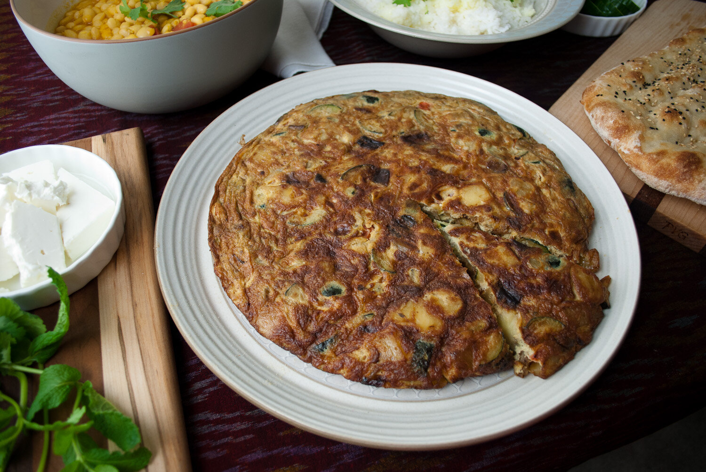

Among numerous varieties of Iranian kuku dishes, the eggplant-based kuku bedemjan is one of the classics. Besides eggplants and eggs, it can consist of various other vegetables, fresh herbs, spices, and occasionally chopped walnuts or tangy Iranian barberries. Just like other kuku dishes, bademjan is traditionally shaped like a thick, round pancake or an omelet that is pan-fried on both sides. It can be served warm or chilled and enjoyed as a quick snack, light main course, or a vegetable side dish.
Meal prep time : 10 minutes
Servings : 4